地政学
サンティアゴは大統領府、国会機能、中央銀行、省庁、企業本社が集まるチリの政治中枢です。アンデス越えのアルゼンチン回路、太平洋港、鉱山地帯を結び、南米南部の国家運営と外交を束ねます。山地国家の要です。

🇨🇱 チリ / 首都州 / World City Atlas
アンデスの雪山と乾いた盆地に置かれたチリの首都。大統領府、鉱業資本、金融街、メトロ、住宅格差、地震への備え、独裁の記憶、ワインと市場の生活が重なります。
都市の骨格
サンティアゴはアンデス山脈と海岸山脈の間に広がる盆地都市です。政治の中心、鉱業と金融の意思決定、メトロの通勤、低所得地区と富裕地区の距離が、乾いた空気と山の輪郭の中で読めます。
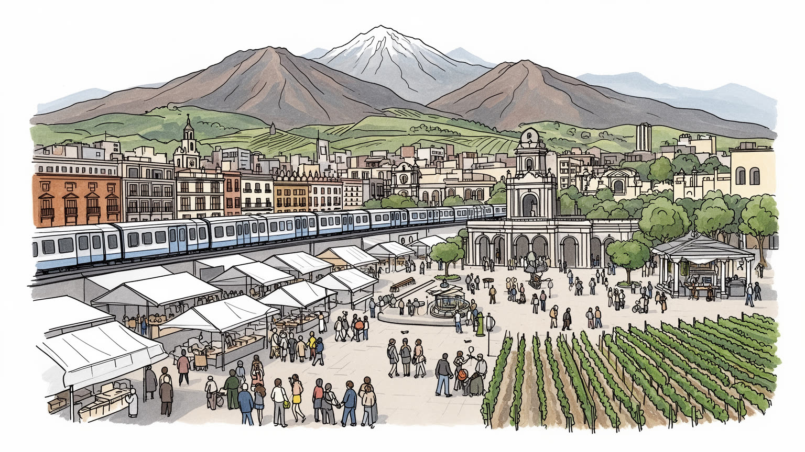
サンティアゴは大統領府、国会機能、中央銀行、省庁、企業本社が集まるチリの政治中枢です。アンデス越えのアルゼンチン回路、太平洋港、鉱山地帯を結び、南米南部の国家運営と外交を束ねます。山地国家の要です。
銅、リチウム、金融、保険、小売、食品、大学、行政、建設、家事労働、配送が重なります。鉱山は北部に多くても、投資判断と専門サービスは首都に集まり、現場労働と白襟職の距離が格差を映し、生活も支える街。
カトリック儀礼、プロテスタント教会、先住民文化、移民の祈り、詩、音楽、壁画、記憶博物館が都市を形作ります。独裁期の傷と民主化の文化は、広場、劇場、大学、家庭の語りにも残ります。静かに続く記憶です。
住民にはメトロ通勤、乾いた夏、大気汚染、水不足、住宅価格、地震への備えが日常です。旅行者はアルマス広場、サンタ・ルシアの丘、ベラビスタ、市場、ワイン渓谷を巡り、山の首都を読みます。坂道も印象的です。
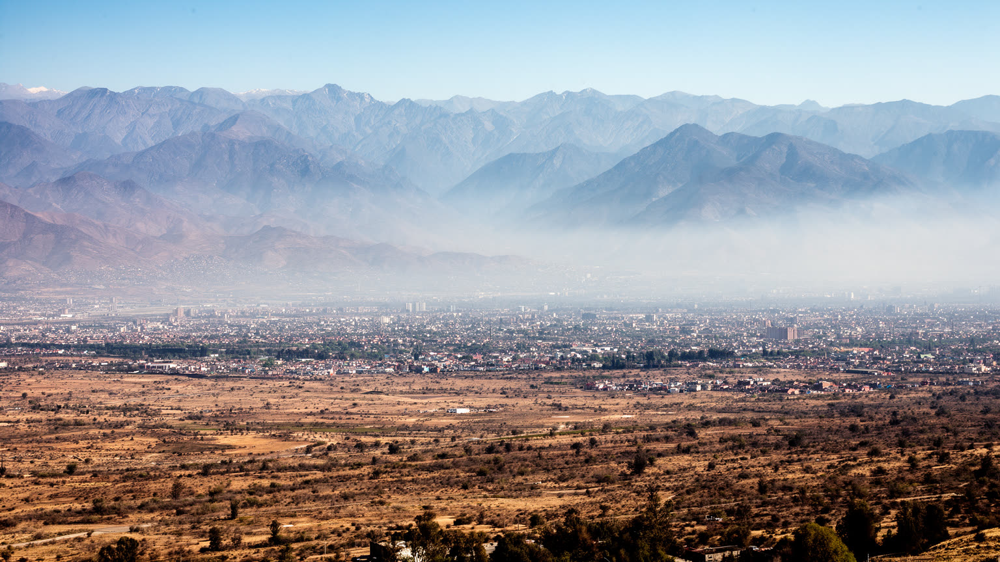
サンティアゴの都市感覚は、まず山に囲まれていることから始まる。東には雪を抱くアンデス山脈、西には海岸山脈があり、その間の盆地に住宅、官庁、金融街、大学、工業地、空港が詰め込まれている。地図では中心部の道路が目立つが、実際の生活では山の見え方、マポチョ川の流れ、扇状地の傾斜、風の弱さが重要になる。盆地は冬の冷気と汚染をためやすく、夏は乾いた暑さと強い日差しが続く。アンデスは観光の背景であると同時に、水源、鉱山、地震、国境交通、富裕地区の眺望を左右する都市の条件である。東へ行くほど所得の高い住宅地やオフィスが増え、西や南の地区には工業、低所得住宅、長い通勤が重なりやすい。山に守られた美しい首都という印象の裏側で、盆地の閉じた空気と土地利用の偏りが社会の違いを可視化する。サンティアゴを読むには、広場だけでなく、山麓の勾配、乾いた河床、郊外へ伸びる幹線、冬のスモッグまで見る必要がある。地形は景色ではなく、都市の公平性とリスクを決める骨格である。さらに、山が近いことは週末の登山やスキーを身近にする一方、斜面開発、土砂災害、森林火災への不安も増やす。眺望を商品にする住宅市場と、空気や水を共有する盆地の現実が同じ空に重なっている。だから、この都市では方角そのものが階層や気候を語る手がかりになる街。
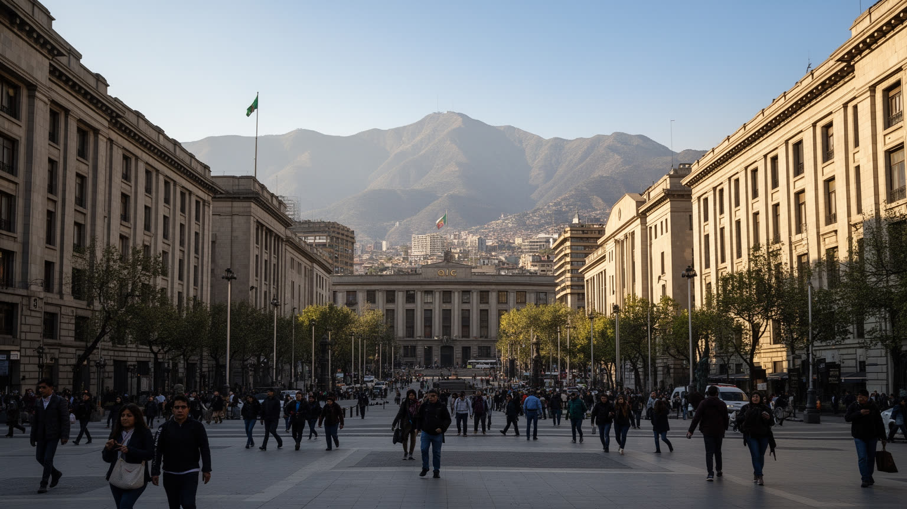
サンティアゴはチリの行政、金融、報道、大学、司法、軍事記憶が集中する首都である。モネダ宮殿とその周辺の広場、省庁、裁判所、中央銀行、企業本社、労働組合、新聞社は、国家の意思決定が都市空間に置かれていることを示す。国会はバルパライソにあるが、多くの政策調整、予算、外交、企業活動は首都圏で動く。デモや追悼、選挙運動、警備、交通規制は、政治が建物の中だけでなく街路で経験されることを教える。チリは細長い国土を持ち、北部の鉱山、南部の森林と港、太平洋岸、アンデス越えの国境を首都から統合している。首都への集中は効率を生む一方、地方との距離、中央政府への不信、災害時の脆さも生む。サンティアゴの政治性は、民主化後の制度だけでなく、独裁期の暴力をどう記憶し、公共空間でどう語るかにも関わる。広場を歩くことは、権力、抗議、日常の通勤が同じ場所を使う現実を見ることだ。首都の強さは、声の大きい中心だけでなく、遠い地域の不満を受け止められるかで測られる。憲法改正をめぐる議論や学生運動の記憶も、首都の広場に集まりやすい。政治首都とは決定の場所であるだけでなく、住民が制度の限界を可視化し、国家の形を問い直す舞台でもある。警察の配置、落書き、追悼の花、通勤者の迂回路まで、政治は街の細部に現れる。その細部が首都の温度を伝える。
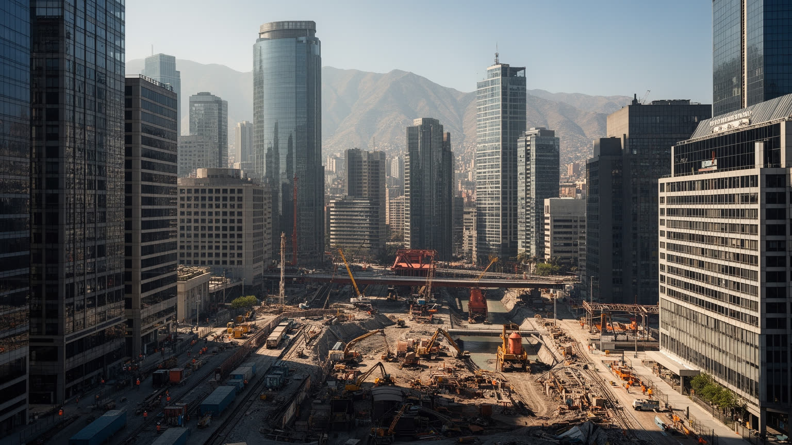
チリ経済を支える銅、リチウム、モリブデンの多くは北部の砂漠や山地で採掘されるが、投資判断、金融、法律、保険、物流契約、技術調達、環境評価はサンティアゴに集まりやすい。首都のオフィス街には鉱業会社、銀行、年金基金、小売、通信、食品企業、大学発の専門人材が集まり、資源国の富を都市のサービス経済へ変換している。鉱山現場と首都の会議室は遠いが、賃金、税収、為替、港湾、先住民の土地、水利用、環境汚染を通じて結ばれる。高収入の専門職、コンサルタント、技術者がいる一方、ビル清掃、警備、飲食、家事労働、配送、建設、コールセンターも首都経済を支える。数字で見える経済成長は、誰が危険な現場に立ち、誰が住宅費に苦しみ、誰が水不足の負担を引き受けるかを隠しやすい。サンティアゴの産業を読むには、鉱山の場所だけでなく、資本、制度、専門サービス、労働の階層が首都で再編される仕組みを見る必要がある。鉱業の利益が公共交通、教育、医療、住宅へどう戻るかが、都市の正当性を左右する。資源価格が変動すれば、雇用、税収、為替、消費の空気も変わる。首都は鉱山から離れているようで、世界市場の波を最も早く制度と生活へ翻訳する場所でもある。資源国の首都としての豊かさは、現場の危険と環境負荷を忘れずに配分されて初めて説得力を持つ都市だ。
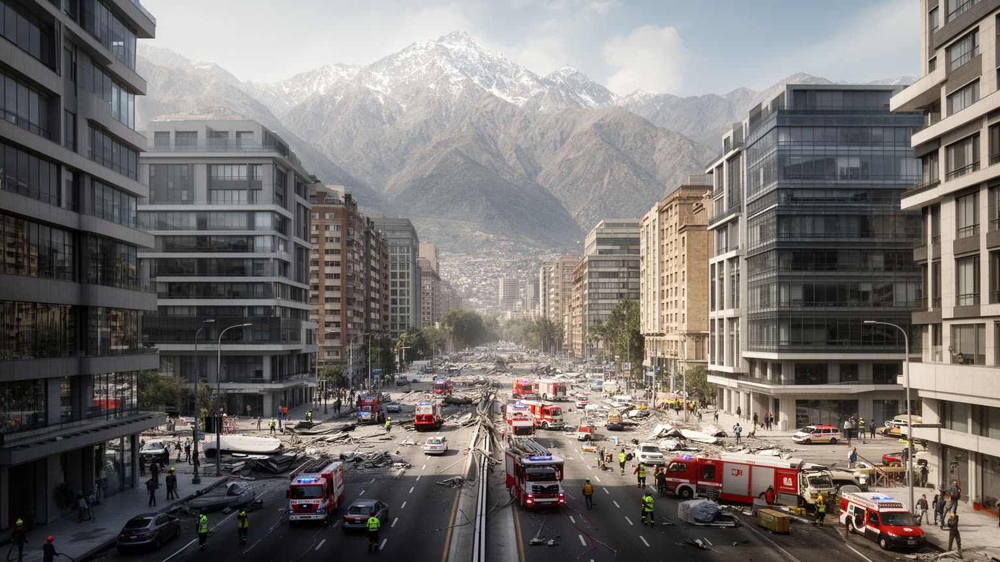
サンティアゴは世界有数の地震国チリの首都であり、都市の近代化は常に揺れへの備えと並行してきた。アンデス沿いのプレート境界、歴史的な大地震、津波を受ける沿岸都市との連携は、建築基準、学校の避難訓練、消防、病院、地下鉄、橋、通信網の計画に影響する。高層ビルが林立する東部の金融街も、古い住宅が残る中心部や南西部も、同じ揺れを受けるが被害の出方は建物の質、地盤、収入、保険、行政支援によって変わる。地震リスクは自然現象であると同時に、住宅格差の問題でもある。安全な建物に住める人、修繕費を払える人、避難情報を理解できる人ほど回復しやすい。水道、電力、交通、病院が止まれば、首都機能と日常生活は同時に試される。チリ社会には地震を経験してきた知識があるが、経験に頼りすぎると高齢者、移民、障害者、低所得世帯が見落とされる。サンティアゴを読む時、耐震の技術だけでなく、揺れた後に誰が支援を受け、誰が孤立するかを見る必要がある。災害への強さは、頑丈な建物と同じくらい、近所、公共サービス、正確な情報で決まる。集合住宅では管理組合、備蓄、階段、断水時の対応が重要になり、古い地区では火災や倒壊後の避難路も課題になる。地震への慣れを誇りにするだけでなく、次の揺れで弱い人を残さない準備が必要である。都市の記憶は訓練で更新される。
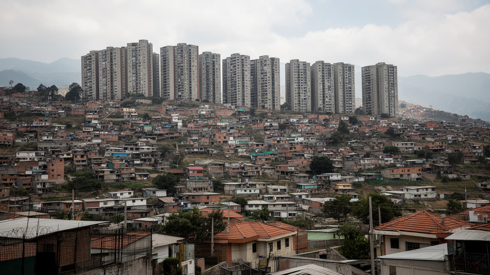
サンティアゴの格差は、地図の東西差として見えやすい。ラス・コンデス、ビタクラ、プロビデンシアのような東部には高所得住宅、オフィス、商業施設、私立学校、医療機関が集まり、南部や西部の周縁には低所得住宅、長い通勤、公共サービス不足が重なりやすい。もちろん地区ごとの現実は単純ではないが、住む場所が学校、治安、緑地、医療、空気の質、移動時間を大きく左右することは明らかである。独裁期以降の市場型住宅政策、社会住宅の周縁化、民間開発、土地価格の上昇は、首都の空間を分けてきた。新しいマンションは中心回帰を促す一方、家賃上昇で古い住民や小商店を押し出すこともある。家事労働者、警備員、清掃員、飲食店員、配達員は富裕地区で働いても、同じ地区に住めるとは限らない。都市の便利さは、遠くから来る人の時間で支えられる。住宅を読むことは、家の広さだけでなく、メトロまでの距離、バスの本数、学校の選択肢、災害時の安全、地域の誇りを見ることである。サンティアゴの公平性は、周縁に住む人が都市の機会へ届くかで試される。移民世帯や若い家族は、契約、保証人、家賃上昇、過密住宅にも直面する。公園、診療所、図書館、保育所が近いかどうかは、収入以上に生活の余白を変える。住宅政策は都市の未来を決める中心課題である。住まいの場所は、都市に参加できる時間を決める。
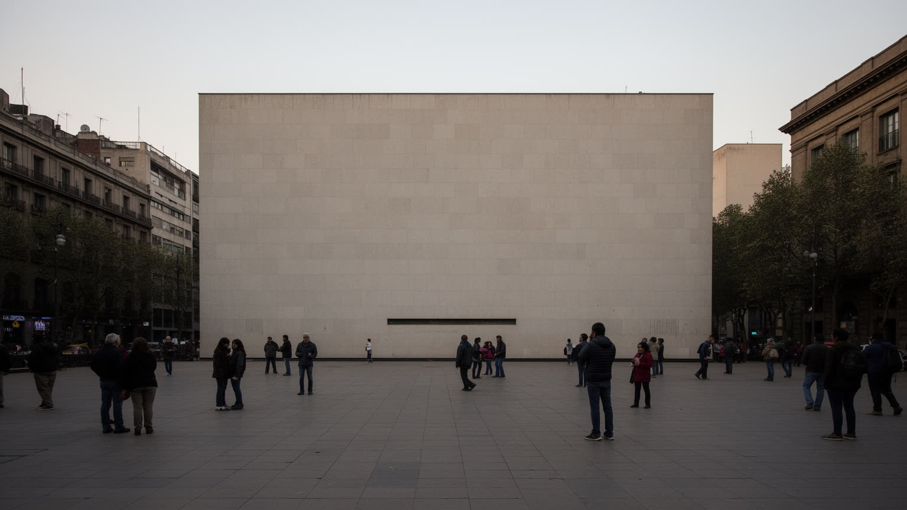
サンティアゴの文化は、詩、音楽、映画、演劇、壁画、大学、書店、サッカー、祭礼が重なっているが、その中心には独裁期の記憶をどう扱うかという問いがある。1973年のクーデター、モネダ宮殿への攻撃、拘束、失踪、亡命、検閲、拷問の記憶は、家族の語り、記念施設、裁判、街頭の落書き、歌に残る。記憶と人権の博物館は、観光の場所である前に、国家暴力を記録し、民主主義を問い直す公共空間である。文化はこの痛みを直接語るだけでなく、日常のユーモア、民衆音楽、学生運動、フェミニズム、先住民運動、移民の表現を通じて広がる。市場や広場、ベラビスタの夜、劇場、大学キャンパスには、政治と芸術が近くにある。カトリックの儀礼や教会の社会活動も、保守的な制度であると同時に、人権支援や地域福祉の場として働いてきた歴史を持つ。サンティアゴの文化を読むには、美しい街並みや音楽だけでなく、沈黙させられた人の名前、抗議する声、日常に残る恐れと回復を見る必要がある。記憶を持つ文化は、都市を過去へ閉じ込めず、現在の不平等を考える力に変える。若い世代は親の沈黙を聞き、学校や音楽、路上の表現を通じて過去を学び直す。文化施設の価値は展示の量ではなく、痛みを公共の対話に変えられるかにある。忘却を急がない姿勢が、民主化後の都市文化を支えている。
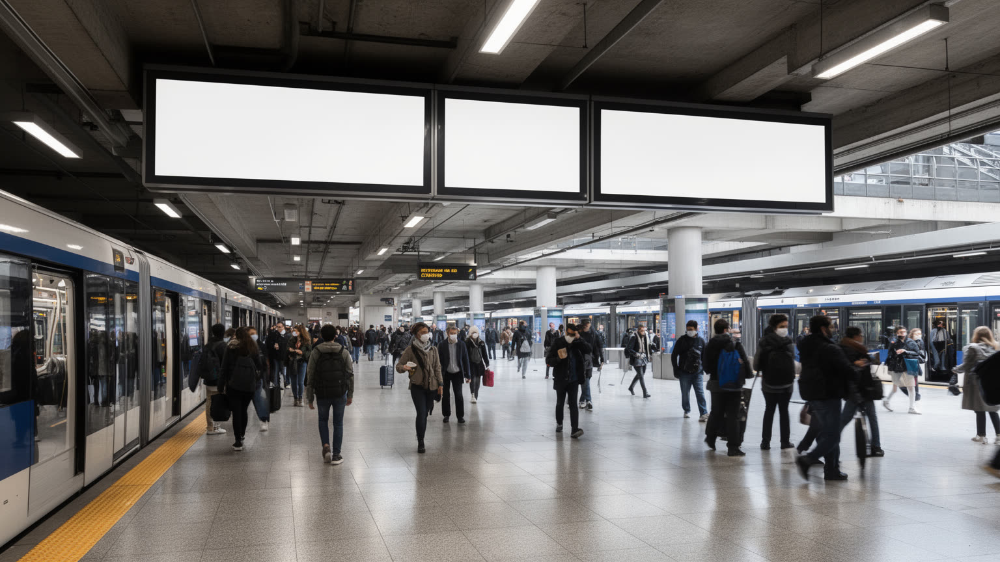
サンティアゴのメトロは南米で重要な都市鉄道の一つであり、長く広がった首都圏を毎日結び直している。地下鉄、バス、徒歩、自転車、幹線道路、郊外鉄道の組み合わせは、仕事、学校、病院、買い物、行政手続きへ届く条件を決める。所得の高い東部だけでなく、南部や西部の住宅地へ線が伸びるほど、都市の機会は広がる。しかし駅の近さ、運賃、混雑、バス乗換、夜間の安全、障害者の利用しやすさは地区ごとに違う。2019年の運賃値上げをきっかけに広がった抗議は、交通費が単なる移動の問題ではなく、生活費、賃金、年金、教育、政治不信と結びつくことを示した。駅は便利なインフラであると同時に、怒りと希望が集まる公共空間にもなる。メトロは大気汚染を減らし、中心部の渋滞を和らげる可能性を持つが、都市全体の公平性を保証するわけではない。終点から先のバス、歩道の安全、日陰、治安、ベビーカーや高齢者の移動まで整って初めて、移動は権利になる。サンティアゴを見る時は、路線図の色だけでなく、長い乗換、朝の混雑、運賃を計算する家計まで読む必要がある。交通は都市の社会契約を映す。新しい路線や駅前開発は周辺の価値を上げるが、家賃上昇で住民を遠ざけることもある。移動の改善が不動産利益だけに吸収されないかも、公共交通の評価に含めたい。駅の外の歩道も同じ政策である。
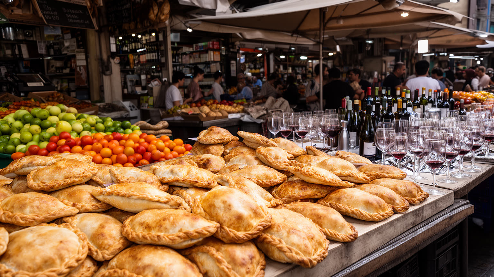
サンティアゴの食は、首都の市場と周囲の谷の農業に支えられている。中央市場の魚介、ベガ・セントラルの野菜と果物、家庭のカスエラ、エンパナーダ、パステル・デ・チョクロ、サンドイッチ、ペルー料理、移民の食堂は、都市の階層と移動を映す。太平洋の海産物は港から届き、マイポ、カサブランカ、コルチャグアなどのワイン産地は首都の観光と外食産業を支える。ワインは国際的な商品であると同時に、労働、灌漑、水利権、季節労働、土地所有の問題を含む。市場では早朝の仕入れ、荷下ろし、清掃、価格交渉、移民労働が食の豊かさを支える。高級レストランやワイナリー巡りだけを見ると、安い昼食、家庭料理、路上の軽食、低賃金で働く人の食事が見えにくい。サンティアゴの食文化を読むには、山と海に近い地理、農業の水不足、移民が持ち込む味、都市の家計を同時に見る必要がある。観光客にとって食は楽しみだが、住民にとっては毎日の時間と収入の問題である。市場とワインは華やかさだけでなく、土地と水をめぐる都市の関係を教えてくれる。近年はペルー、ハイチ、ベネズエラなどから来た人びとの料理も街の味を広げる。食卓の変化は移民の労働、言語、住まいを可視化し、首都がより複雑な都市へ変わる過程を示している。昼食の一皿にも、港、畑、市場、移民の手が重なる街だ。
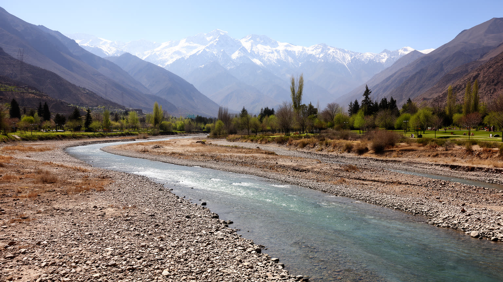
サンティアゴは地中海性気候の都市で、夏は乾き、冬に雨が集中する。かつてはアンデスの雪解け水と季節雨が都市、農業、発電、緑地を支えてきたが、長期の干ばつ、気温上昇、氷河の後退、人口増加によって水の不安が強まっている。乾いた庭やゴルフ場、富裕地区の緑、低所得地区の暑い住宅、農業用水、鉱業の水利用は同じ流域の中で競合する。水不足は環境問題であると同時に、誰が涼しさを買え、誰が断水や暑さに耐えるのかという公平性の問題である。冬の雨が少ない年は貯水池が不安になり、夏の熱波は高齢者、屋外労働者、通勤者、学校に影響する。盆地の大気汚染も気候と関係し、風が弱い日には粒子状物質が滞留する。都市の気候適応は、節水だけでなく、街路樹、日陰、公共の涼める場所、断熱住宅、雨水利用、流域管理、情報の伝え方を含む。アンデスの雪山が見えることは美しいが、その雪が減ることは都市の未来を揺らす。サンティアゴを読むには、景観としての山ではなく、水源としての山を意識する必要がある。乾いた首都の持続性は、水を公平に使う制度で決まる。水道料金、農業輸出、鉱業、都市の緑化は別々の政策に見えて、同じ限られた水を分け合う問題である。気候危機は遠い未来ではなく、すでに生活費と健康に現れている。水をめぐる信頼は、都市の政治的安定にも関わる。
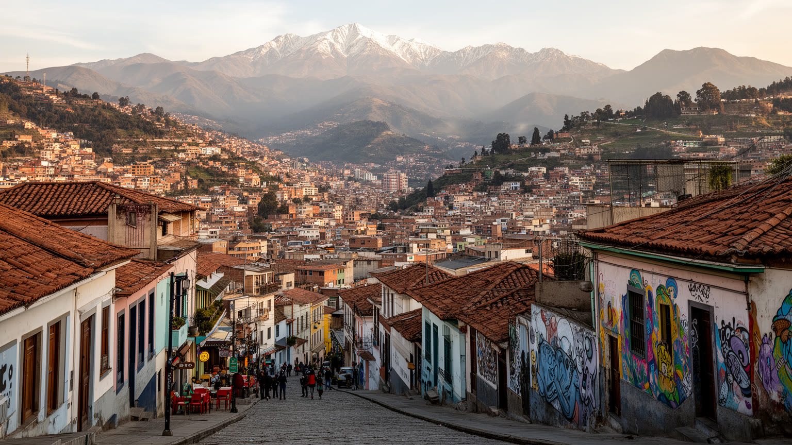
サンティアゴ観光は、アルマス広場、メトロポリタン大聖堂、モネダ宮殿、サンタ・ルシアの丘、サン・クリストバルの丘、ベラビスタ、ラスタリア、市場、博物館を歩くことから始まる。中心部では植民地期の広場、共和国の官庁、近代の商業、学生の通りが近くにあり、丘へ上がるとアンデスを背景に都市の広がりが見える。ベラビスタやラスタリアには飲食、劇場、壁画、夜のにぎわいがあり、観光と住民の余暇が重なる。郊外へ出ればワイナリー、アンデスのスキー場、バルパライソへの日帰りも可能で、首都は山と海を結ぶ旅の拠点になる。しかし観光地化は家賃、騒音、短期滞在、警備、清掃、地元店の変化を伴う。旅行者が快適に歩く通りの裏で、住民は通勤、買い物、子育て、治安への不安を抱える。サンティアゴの名所は美しいだけでなく、独裁の記憶、社会運動、移民の商売、格差の地図とつながっている。観光を通じて都市を読むなら、写真を撮る場所だけでなく、誰がその地区に住み続けられるかも見る必要がある。丘からの眺望は、首都の魅力と不平等を同時に見せる。市場で食べ、メトロで移動し、記憶施設を訪れ、山を眺める旅は、名所消費を越えて都市の条件を理解する入口になる。観光は短い滞在でも、首都の矛盾に触れる学びになり得る。歩く速度を落とすほど、地区ごとの生活が見える。
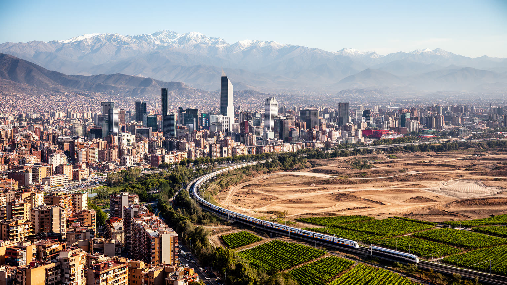
サンティアゴは、アンデスの眺望だけで理解できる都市ではない。山に囲まれた盆地は美しいが、その地形は大気汚染、水不足、地震リスク、東西の所得差も生む。モネダ宮殿の政治、鉱業会社と金融の意思決定、メトロの通勤、周縁住宅地、記憶博物館、市場、ワイン渓谷、移民の食堂は、同じ首都圏の中で結ばれている。チリの資源経済は北部の鉱山で生まれ、首都の会議室と銀行で処理され、税や賃金や住宅価格として住民の生活へ戻る。独裁の記憶は過去の話ではなく、民主主義、警察、教育、家族の沈黙、文化表現を今も形作る。都市の成功を金融街や観光だけで測れば、長い通勤、水をめぐる不安、地震に弱い住宅、家事労働や配送の負担が見えなくなる。逆に格差だけで見れば、文化、教育、市民運動、公共交通、食とワインの豊かさを見落とす。サンティアゴを読むことは、国家の中心が自然条件と社会の傷を抱えながら、毎日どう動いているかを見ることだ。雪山、広場、駅、市場、記憶の場所を一つの地図に重ねると、チリの近代化と課題が立体的に見えてくる。首都は国の成功を示すショーケースであると同時に、資源依存、格差、気候危機、記憶の争いが最も濃く表れる場所でもある。その両面を同時に読む時、サンティアゴは南米南部を理解する重要な入口になる。山の美しさと都市の緊張を分けずに見ることが、この街の読み方である。